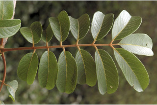
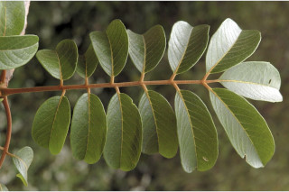
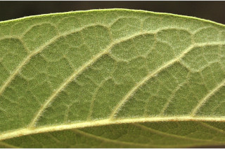
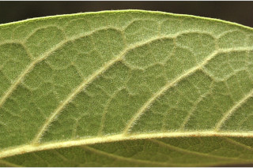

Trees up to 18 m tall.
18 ಮೀ ಎತ್ತರದವರೆಗಿನ ಮರಗಳು.
Trees up to 18 m tall.
மரங்கள் 18 மீ. உயரம் வரை வளரக்கூடியது.
Bark brownish, lenticellate; blaze pink with orange speckles.
ತೊಗಟೆ ಕಂದು ಬಣ್ಣದಲ್ಲಿದ್ದು ವಾಯು ವಿನಿಮಯ ಬೆಂಡು ರಂಧ್ರಗಳ ಸಮೇತವಿರುತ್ತವೆ;ಕಚ್ಚು ಮಾಡಿದ ಜಾಗ ಕಿತ್ತಳೆ ಬಣ್ಣದ ಚುಕ್ಕೆಗಳ ಸಮೇತವಿರುವ ನಸುಗೆಂಪು ಬಣ್ಣ ಹೊಂದಿರುತ್ತವೆ.
Bark brownish, lenticellate; blaze pink with orange speckles.
மரத்தின் பட்டை ப்ரவுன் நிறமானது, பட்டைத்துளைகள் (லெண்டிசெல்லேட்) உடையது; உள்பட்டை பிங்க் நிறமானது மற்றும் ஆரஞ்ச் நிறமான புள்ளிகளுடையது.
Young branchlets stout, angular to subterete, lenticellate, rusty tomentose.
ಎಳೆಯ ಕಿರುಕೊಂಬೆಗಳು ದೃಢವಾಗಿದ್ದು, ಕೋನಯುಕ್ತದಿಂದ ಉಪ-ದುಂಡಾದವರೆಗಿನ ಆಕಾರ ಹೊಂದಿದ್ದು ವಾಯು ವಿನಿಮಯ ಬೆಂಡು ರಂಧ್ರಗಳ ಸಮೇತವಿದ್ದು ತುಕ್ಕು ಬಣ್ಣದ ದಟ್ಟ ಮೃದು ತುಪ್ಪಳದಿಂದ ಕೂಡಿರುತ್ತವೆ.
Young branchlets stout, angular to subterete, lenticellate, rusty tomentose.
சிறிய நுனிக்கிளைகள் தடித்தவை, குறுக்குவெட்டுத் தோற்றத்தில் கோணங்களுடையது முதல் கிட்டதட்ட வளையமானது, பட்டைத்துளைகள் (லெண்டிசெல்லேட்) உடையது, துருப்போன்ற உரோமங்களுடையது.
Leaves compound, imparipinnate, alternate, spiral; rachis terete, rusty tomentose, pulvinate; petiolule 0.2- 1.5 cm long, rusty tomentose; leaflets 3-7 pairs with one terminal leaflet, subopposite or opposite, 6.5-15 x 2.5-5 cm, lanceolate to ovate - oblong, apex gradually acuminate, base asymmetric and acute or rounded, margin entire, sometimes remotely dentate, thinly coriaceous, tomentose on nerves beneath; midrib canaliculate above; secondary_nerves ascending; tertiary_nerves coarsely reticulate.
ಎಲೆಗಳು ಸಂಯುಕ್ತ ಹಾಗೂ ಅಸಮ ಗರಿ ರೂಪಿ ಮಾದರಿಯದಾಗಿದ್ದು ಪರ್ಯಾಯ ಮತ್ತು ಸುತ್ತು ಜೋಡನಾ ವ್ಯವಸ್ಥೆಯಲ್ಲಿರುತ್ತವೆ;ಅಕ್ಷದಿಂಡು ದುಂಡಾಗಿದ್ದು ತುಕ್ಕು ಬಣ್ಣದ ದಟ್ಟ ಮೃದು ತುಪ್ಪಳದಿಂದ ಕೂಡಿರುತ್ತವೆ ಮತ್ತು ಉಬ್ಬಿದ ಬುಡದ ಸಮೇತವಿರುತ್ತದೆ;ಉಪತೊಟ್ಟುಗಳು 0.2 ರಿಂದ 1.5 ಸೆಂ.ಮೀ. ಉದ್ದಹೊಂದಿದ್ದು ತುಕ್ಕು ಬಣ್ಣದ ದಟ್ಟ ಮೃದು ತುಪ್ಪಳದಿಂದ ಕೂಡಿರುತ್ತವೆ; ಉಪಪತ್ರಗಳು ಒಂದು ಅಗ್ರದಲ್ಲಿನ ಉಪಪತ್ರದ ಸಮೇತವಿದ್ದು 3 ರಿಂದ 7 ಜೋಡಿಗಳಿರುತ್ತವೆ ಮತ್ತು ಉಪಅಭಿಮುಖಿ ಅಥವಾ ಅಭಿಮುಖಿಗಳಾಗಿರುತ್ತವೆ, 6.5 -15 X 2.5 - 5 ಸೆಂ.ಮೀ ಗಾತ್ರ, ಭರ್ಜಿಯಿಂದ ಅಂಡ-ಚತುರಸ್ರದ ಆಕಾರ, ಬರಬರುತ್ತಾಕ್ರಮೇಣ ಚೂಪಾಗುವವರೆಗಿನ ರೀತಿಯ ತುದಿ,ಅಸಮ್ಮಿತಿಯಾದ ಮತ್ತು ಚೂಪಾದ ಅಥವಾ ದುಂಡಾದ ಬುಡ ಹೊಂದಿರುತ್ತವೆ,ಅಂಚು ನಯವಾಗಿರುತ್ತದೆ,ಕೆಲವು ವೇಳೆ ಹೆಚ್ಚಿನ ಅಂತರವುಳ್ಳ ದಂತಿತ ಮಾದರಿಯಲ್ಲಿರುತ್ತದೆ,ಮತ್ತು ತೆಳುವಾದ ತೊಗಲನ್ನೋಲುವ ಮೇಲ್ಮೈ ಹೊಂದಿರುತ್ತವೆ, ಉಪಪತ್ರಗಳ ತಳಭಾಗದ ನಾಳಗಳ ಮೇಲೆ ದಟ್ಟಮೃದು ತುಪ್ಪಳವಿರುತ್ತದೆ;ಮಧ್ಯನಾಳ ಮೇಲ್ಭಾಗದಲ್ಲಿ ಕಾಲುವೆಗೆರೆಯನ್ನು ಹೊಂದಿರುತ್ತದೆ;ಎರಡನೇ ದರ್ಜೆಯ ನಾಳಗಳು ಆರೋಹಣ ಮಾದರಿಯವುಗಳಾಗಿರುತ್ತವೆ;ಮೂರನೇ ದರ್ಜೆಯ ನಾಳಗಳು ಒರಟಾದ ಜಾಲಬಂಧ ನಾಳ ವಿನ್ಯಾಸದಲ್ಲಿರುತ್ತವೆ.
Leaves compound, imparipinnate, alternate, spiral; rachis terete, rusty tomentose, pulvinate; petiolule 0.2- 1.5 cm long, rusty tomentose; leaflets 3-7 pairs with one terminal leaflet, subopposite or opposite, 6.5-15 x 2.5-5 cm, lanceolate to ovate - oblong, apex gradually acuminate, base asymmetric and acute or rounded, margin entire, sometimes remotely dentate, thinly coriaceous, tomentose on nerves beneath; midrib canaliculate above; secondary_nerves ascending; tertiary_nerves coarsely reticulate.
இலைகள் கூட்டிலை, ஒற்றைபடை சிறகு வடிவக்கூட்டிலைகள், மாற்றுஅடுக்கமானவை, சுழல் போன்று அமைந்தவை; மத்தியகாம்பு (ராக்கிஸ்) குறுக்குவெட்டுத் தோற்றத்தில் வளையமானது, துருப்போன்ற உரோமங்களுடையது, பல்வினேட்; சிற்றிலைக்காம்பு 0.2-1.5 செ.மீ. நீளமானது, துருப்போன்ற உரோமங்களுடையது; சிற்றிலை 3-7 ஜோடிகளுடன் நுனியில் தனி சிற்றிலையுடையது, கிட்டதட்ட எதிரடுக்கமானவை அல்லது எதிரடுக்கமானவை, 6.5-15 x 2.5-5 செ.மீ., ஈட்டி வடிவானது முதல் முட்டை-நீள்சதுர வடிவானது, அலகின் நுனி சீராக அதிக்கூரியது, அலகின் தளம் சமமற்றது மற்றும் கூரியது அல்லது வட்டமானது, அலகின் விளிம்பு முழுமையானது, சிலசமயங்களில் ஆங்காங்கே பற்களுடையது, மெல்லிய கோரியேசியஸ், அலகின் கீழ்பரப்பில் மையநரம்பு உரோமங்களுடையது; மையநரம்பு மேற்புறத்தில் அலகின் பரப்பைவிட பள்ளமானது; இரண்டாம் நிலை நரம்புகள் நுனி நோக்கி வளைந்தவை; மூன்றாம் நிலை நரம்புகள் அகன்ற வலைப்பின்னல் போன்றவை.
Inflorescence terminal and axillary panicles, tomentose; flowers greenish, sessile.
ಪುಷ್ಪಮಂಜರಿಗಳು ತುದಿಯಲ್ಲಿನ ಮತ್ತು ಅಕ್ಷಾಕಂಕುಳಿನಲ್ಲಿನ ಪುನರಾವೃತ್ತಿಯಾಗಿ ಕವಲೊಡೆಯುವ ಮಾದರಿಯವುಗಳಾಗಿದ್ದು,ದಟ್ಟ ಮೃದು ತುಪ್ಪಳದಿಂದ ಕೂಡಿರುತ್ತವೆ; ಹೂಗಳು ಹಸಿರು ಮಿಶ್ರಿತ ಬಿಳಿ ಬಣ್ಣದಲ್ಲಿರುತ್ತವೆ ಹಾಗೂ ತೊಟ್ಟುರಹಿತವಾಗಿರುತ್ತವೆ.
Inflorescence terminal and axillary panicles, tomentose; flowers greenish, sessile.
மஞ்சரி தண்டின் நுனியில் மற்றும் இலைக்கோணங்களில் காணப்படுபவை, பேனிக்கிள் வகை மஞ்சரி, உரோமங்களுடையது; மலர்கள் பச்சை நிறமானது, காம்பற்றது.
Drupe, globose, 0.5 cm across; seed one, smooth.
ಡ್ರೂಪ್ಗಳು ಗೋಳಾಕಾರ ಹೊಂದಿದ್ದು, 0.5 ಸೆಂ.ಮೀ ಅಡ್ಡಗಲತೆಯನ್ನು ಹೊಂದಿರುತ್ತವೆ; ಬೀಜಗಳ ಸಂಖ್ಯೆ 1 ಇದ್ದು ನಯವಾಗಿರುತ್ತವೆ.
Drupe, globose, 0.5 cm across; seed one, smooth.
உள்ளோட்டுத்தசைகனி (ட்ரூப்), கோள வடிவமானது, 0.5 செ.மீ. குறுக்களவுடையது; ஒர் விதையுடையது, வழுவழுப்பானது.


 



 
